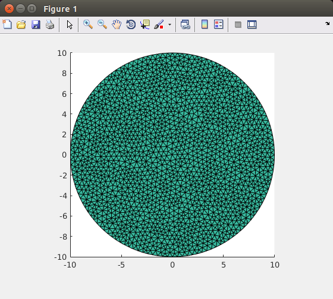
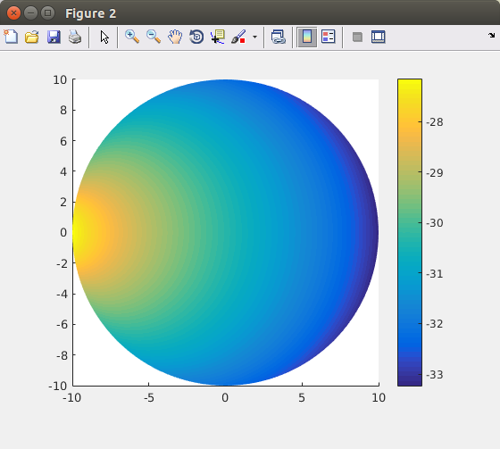

| Image Reconstruction in Diffuse Optical Tomography |
Adaptive meshingGmsh allows to define the local mesh density based on the nodal coefficients of a background mesh. In this tutorial we will demonstrate how to use this feature to produce an adaptive mesh in Toast. For simplicity, this example is performed in 2D, but it can be applied equally to 3D problems. Step 1: Initial mesh with uniform node densityWe start from a simple geometry, defining a circle with radius 25. You can either use the circle.geo file found in examples/matlab/gmsh/circle.geo, or just copy the definition below into a new file circle.geo:
Point(1) = {0,0,0,1};
Point(2) = {25,0,0,1}; Point(3) = {-25,0,0,1}; Point(4) = {0,25,0,1}; Point(5) = {0,-25,0,1}; Circle(1) = {3,1,5}; Circle(2) = {5,1,2}; Circle(3) = {2,1,4}; Circle(4) = {4,1,3}; Line Loop(5) = {1,2,3,4}; Plane Surface(6) = {5}; Now generate a mesh from this geometry. We do this from Matlab, so that the entire process can be packaged into a script:
system ('gmsh -2 circle.geo -o tmp.msh');
which runs a non-interactive gmsh session. "-2" runs the 2D mesh generator, and "-o" specifies the output file name. Load the new mesh into Toast:
mesh = toastMesh('tmp.msh','gmsh');
mesh.Display;
where flag 'gmsh' tells Toast to read a mesh in gmsh format. The Display command shows the mesh structure. Gmsh has produced an unstructured mesh with homogeneous node density.  Unstructured mesh with uniform mesh density Step 2: Run a forward problemTo generate a simple density function for the adaptive process, we now run a forward problem on this mesh, and use the resulting field to determine the target node density. You can apply other criteria for the adaptive remeshing, but the mechanism remains the same.
% system matrix
n = mesh.NodeCount; mua = ones(n,1)*0.01; % absorption coefficient mus = ones(n,1)*1; % scattering coefficient ref = ones(n,1)*1.4; % refractive index % rhs (single source) mesh.SetQM([-25,0],[25,0]); qvec = mesh.Qvec('Neumann','Gaussian',2); % solve phi = sysmat\qvec; figure; mesh.Display(log(phi));  The field computed on the uniform mesh Step 3: Construct the density function and remeshWe now rescale the field for a suitable density range, and write a it out as a gmsh background mesh (.pos).
dns = -log(phi);
dns = (dns-min(dns))/(max(dns)-min(dns))*1.8+0.2; mesh.Write('tmp.pos','gmsh-pos',dns); where flag 'gmsh-pos' directs Toast to write the mesh in gmsh .pos format, using the third argument (dns) as a nodal coefficient vector. Now we call gmsh again, loading both the background mesh and the circle geometry, and remesh based on the background mesh coefficients:
system('gmsh -bgm tmp.pos -merge circle.geo -2 -o adaptive.msh');
mesh2 = toastMesh('adaptive.msh','gmsh'); mesh2.Display;
The remeshed circle, using the forward field as density function. |